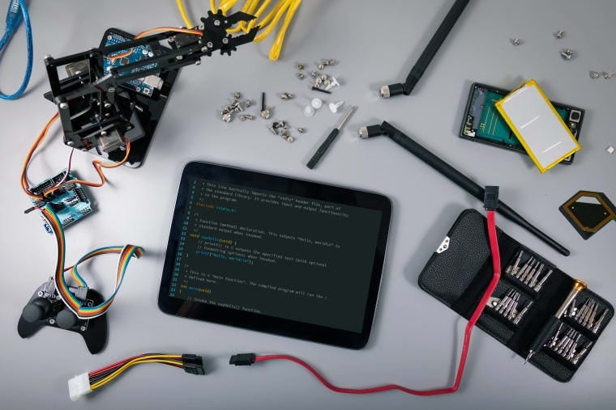
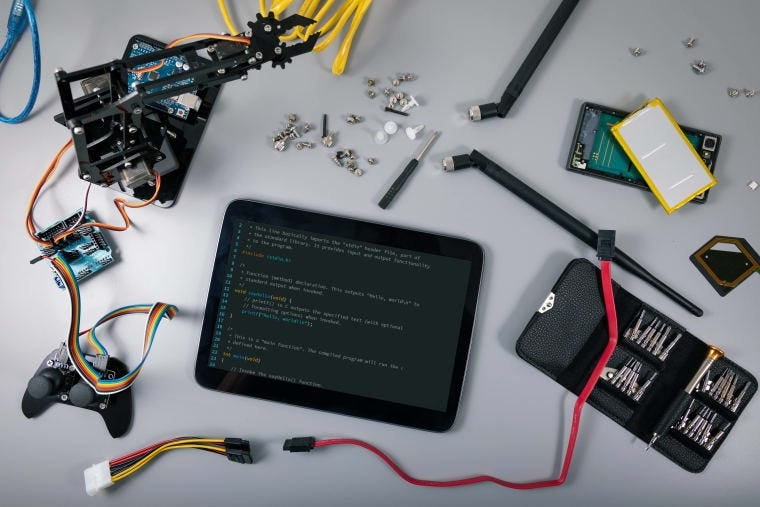
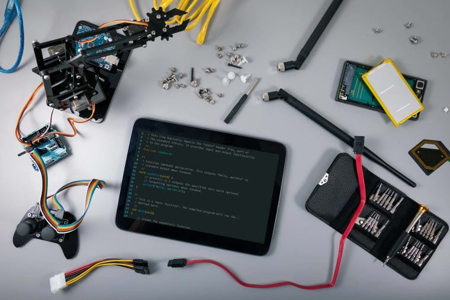

MY WEBSITE
PORTFOLIO
 

PORTFOLIO
ITEC 101
-
MY - EXPERIENCE
In my ITEC 101 class, I gained a solid foundation in information technology and its real-world applications. The course covered a range of topics, from basic computer systems to data management and cybersecurity, which broadened my understanding of the tech field. I particularly enjoyed learning about the latest trends in digital tools and software, as well as understanding the importance of ethical practices in technology. Hands-on projects allowed me to apply the concepts in practical ways, enhancing my problem-solving skills. Overall, the experience was insightful and sparked a deeper interest in pursuing further studies in IT.
Learn more...
